7045A14 Front seat CUSHION ASSEMBLY (one), left or right - R.R.
- Path
- Procedures > 70 FITTINGS > 7045 FRONT SEATS > 7045A front seat assembly > 7045A14 Front seat CUSHION ASSEMBLY (one), left or right - R.R.
- Kind
- repair procedure (removal / refitting; the operation number is the code)
- Applies to
- all engines; all production periods
- Interactive page
- https://sloeber94.github.io/elrnDB-fMltpl/en/#/2892220
Applies to: all engines; all production periods
 Removing
Removing
 Refitting
Refitting7045B10 l/h or r/h front seat head restraint - r+r
7045A42 l/h or r/h front seat guard (one) - r+r (right and left)
7045A18 FRONT SEAT BACKREST ASSEMBLY (ONE), LEFT OR RIGHT - R.R.
1. Remove the knob using the special tool.
 | Name | Country |
|---|---|---|
1 | Scraper blade | 1.878.077.000 |
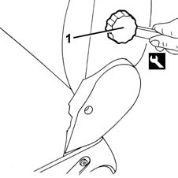
Applies to: all engines; all production periods
1. Remove the head restraint guides.
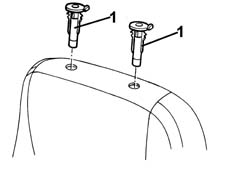
Applies to: all engines; all production periods
1. Disconnect the rear bottom end of the squab cover.
Start from one end.
2. Disconnect the front end from the frame retainer.
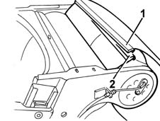
Applies to: all engines; all production periods
1. If necessary, remove the cover (1a) from the padding to gain access to the lumbar adjustment device (1b).
2. Undo the bolts.
3. Disconnect the adjustment cable (3a) from the two retainers (3b).
4. Take out the cable with the control base.
5. If necessary, disconnect the retainers (5a) and remove the lumbar adjustment device (5b).
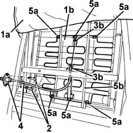
Applies to: all engines; all production periods
1. Remove the cover (1a) from the padding to gain access to the retaining rings (1b) then cut them.
2. Remove the cover complete with padding.
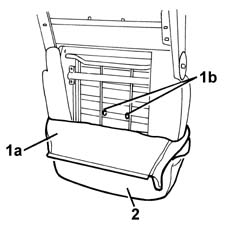
Applies to: all engines; all production periods
1. If necessary, separate the cover (1a) from the padding (1b) after cutting the four rings (1c).
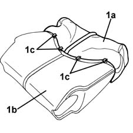
Applies to: all engines; all production periods
Refitting
RemovingCheck that the cover is intact and shows no signs of damage.
If removed, refit the cover on the padding and secure it with the four rings.
Fit the cover with padding onto the squab frame and secure it with the two rings.
If removed, refit the lumbar adjustment device and connect the retainers.
Fit the cable with the control base.
Connect the adjustment cable to the two retainers.
Tighten the bolts.
Fit the squab cover on the padding.
Connect the front end of the cover to the frame retainer.
Fit the cover fully onto the padding.
Connect the front end of the cover to the frame retainer.
Also connect the rear end of the cover.
Mould the cover onto the padding.
Fit the head restraint guides.
Fit the knob.
Line up the reference.
7045A18 FRONT SEAT BACKREST ASSEMBLY (ONE), LEFT OR RIGHT - R.R.
7045A42 l/h or r/h front seat guard (one) - r+r (right and left)
Applies to: all engines; all production periods
Applies to: all engines; all production periods; only with equipment: ESP
Removing
Refitting7045B10 l/h or r/h front seat head restraint - r+r
7045A42 l/h or r/h front seat guard (one) - r+r (right and left)
1. Remove the knob using the special tool.
| Name | Country |
|---|---|---|
1 | Scraper blade | 1.878.077.000 |
Applies to: all engines; all production periods; only with equipment: ESP
1. Disconnect the rear bottom end of the squab cover. Start from one end.
2. Disconnect the front end from the frame retainer.
Applies to: all engines; all production periods; only with equipment: ESP
1. If necessary, remove the cover (1a) from the padding to gain access to the lumbar adjustment device (1b).
2. Undo the bolts.
3. Disconnect the adjustment cable (3a) from the two retainers (3b).
4. Take out the cable with the control base.
5. If necessary, disconnect the retainers (5a) and remove the lumbar adjustment device (5b).
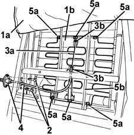
Applies to: all engines; all production periods; only with equipment: ESP
1. Remove the cover (1a) from the upholsetery until it is possible to gain access to the Air Bag module (1b).
2. Disconnect the ends (2a) of the retaining rod (2b) from the seat structure.
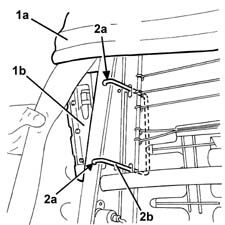
Applies to: all engines; all production periods; only with equipment: ESP
1. Working from the front of the backrest, remove the cover (1a) from the upholstery until it is possible to gain access to the four retaining rings (1b) then cut them.
2. Extract the rod from the upholstery openings.
3. Remove the cover from the head restraint housings.
4. Remove the cover.
5. If necessary, remove the upholstery, releasing it from the housings for the head restraints.
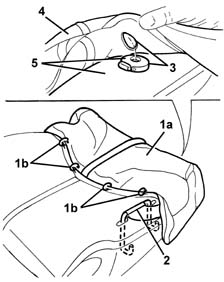
Applies to: all engines; all production periods; only with equipment: ESP
Refitting
RemovingCheck that the cover is intact and shows no signs of damage.
1. Check that the identifying mark of the Air Bab squab cover is on the same side as the side Air Bag module.
If a new squab cover is fitted, attach the labels as described below.
2. Remove the removable part (2b) of the adhesive label from the new squab cover (2a). Place a copy of the label (2b) in a specific file containing the vehicle details (model, registration data, chassis number) and the serial number of the old squab cover. This file should be kept for future checks.
3. Apply the original label (2b) to the inner part at the bottom of the seat, where there are already the equivalent labels for seat, side Air Bag module and Air Bag wiring.
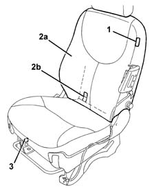
Applies to: all engines; all production periods; only with equipment: ESP
1. If removed, reposition the upholstery and fit it in the housings for the head restraint.
2. Fit the cover for the backrest in the housings for the head restraint.
3. Insert the first part (3a) of the cover and secure it to the upholstery using the four retaining rings (3b).
4. Fit the rod (4a) in the opening for the upholstery with the short side (4b) facing the head restraint.
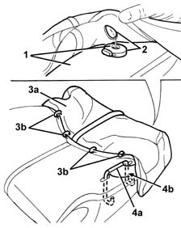
Applies to: all engines; all production periods; only with equipment: ESP
1. Working at the rear of the backrest, connect the ends (1a) of the cover retaining rod (1b) to the seat structure.
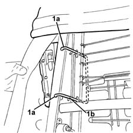
Applies to: all engines; all production periods; only with equipment: ESP
If removed, refit the lumbar adjustment device and connect the retainers.
Fit the cable with the control base.
Connect the adjustment cable to the two retainers.
Tighten the bolts.
Completely fit the backrest cover to the upholstery.
Connect the front end of the cover to the frame retainer.
Also connect the rear end of the cover.
Mould the cover onto the padding.
Fit the knob and line up the reference.
7045A42 l/h or r/h front seat guard (one) - r+r (right and left)
Topics linked from this page (4)
- 5580C AIR BAG SYSTEM
- 7045A18 FRONT SEAT BACKREST ASSEMBLY (ONE), LEFT OR RIGHT - R.R.
- 7045A42 l/h or r/h front seat guard (one) - r+r
- 7045B10 l/h or r/h front seat head restraint - r+r